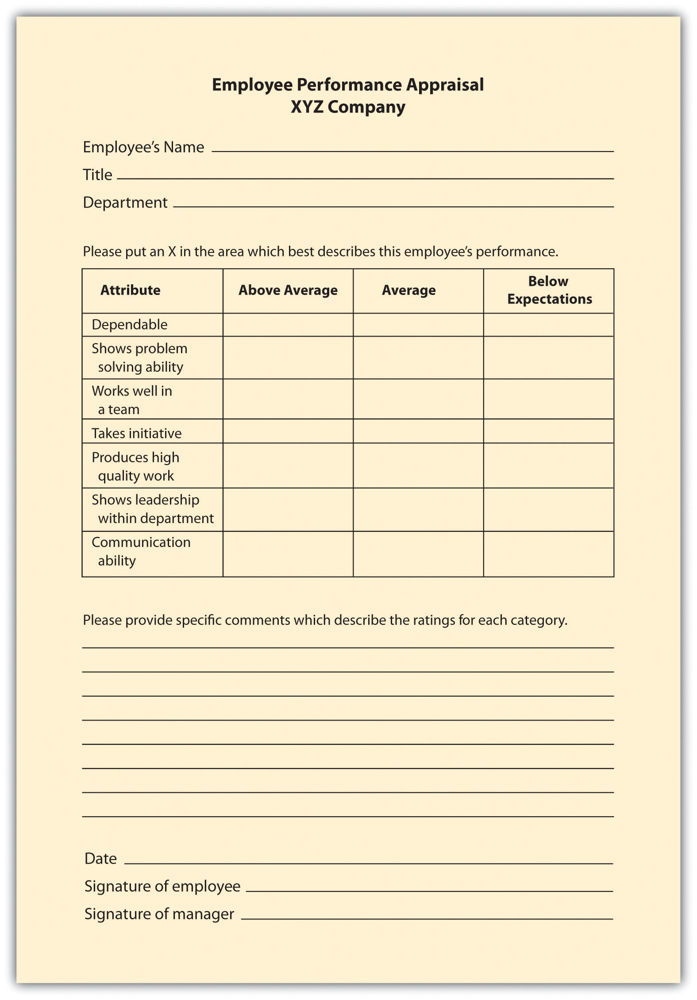
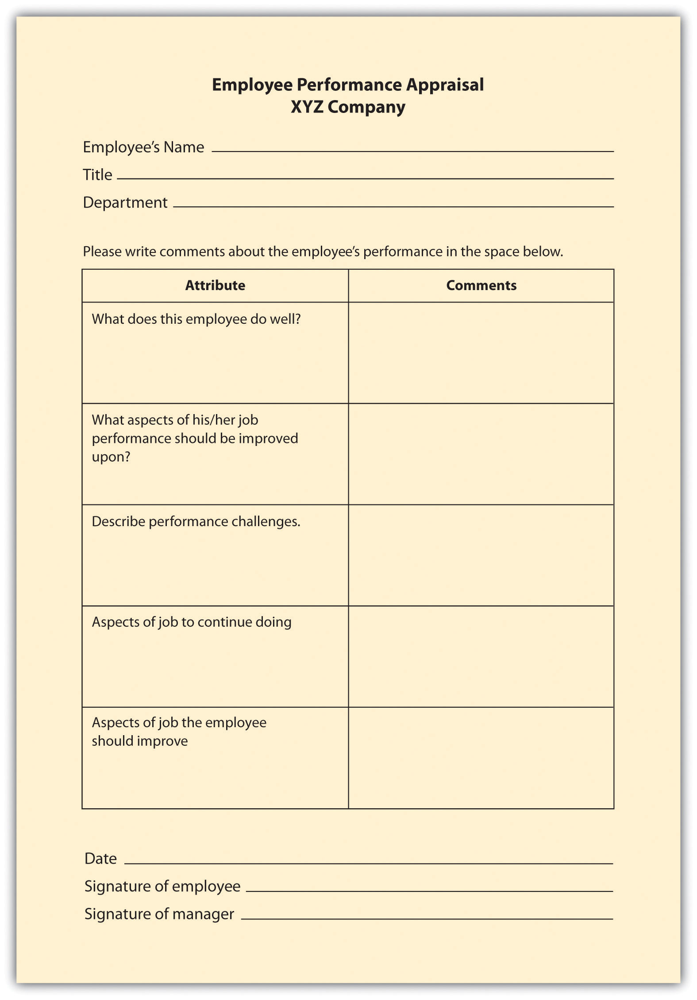
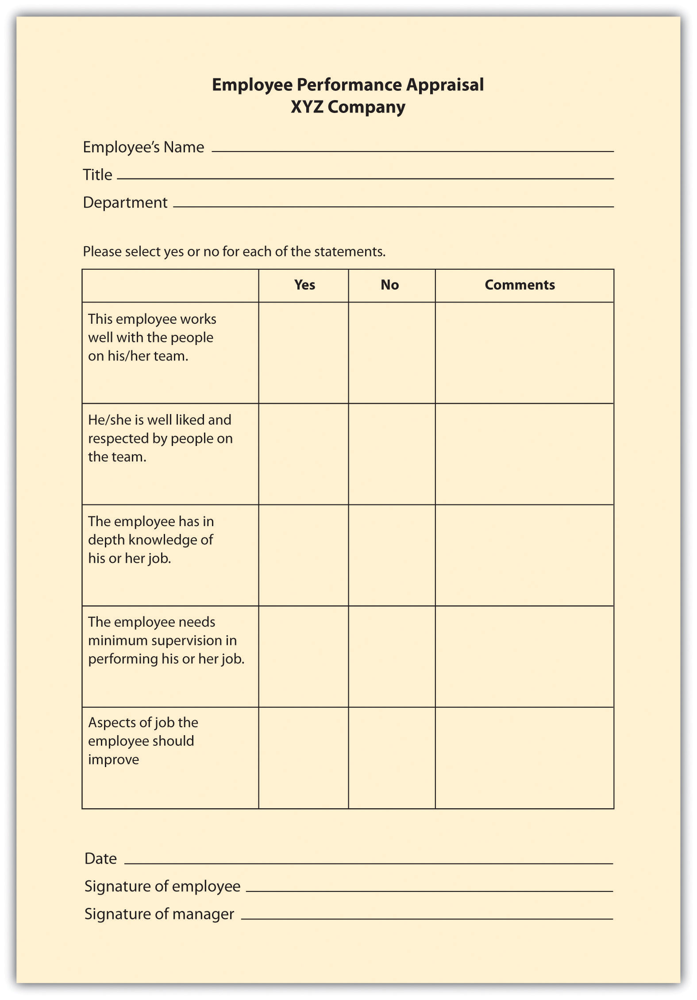
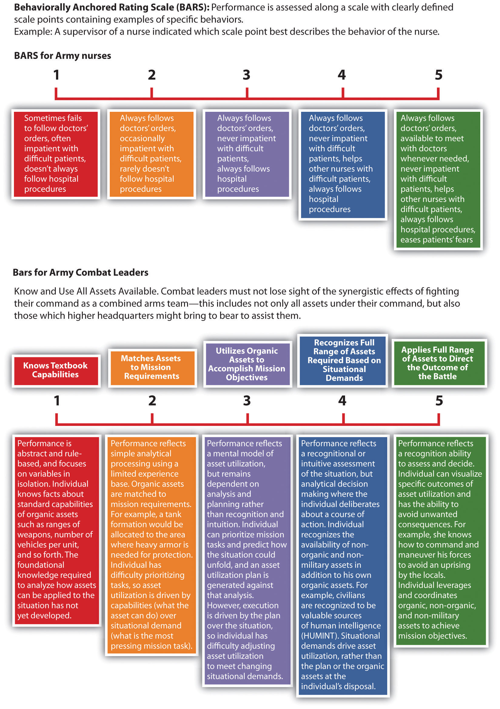
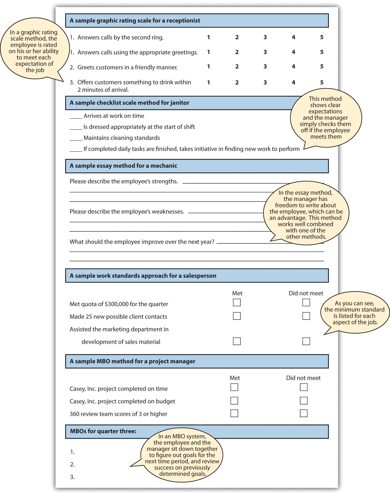

It probably goes without saying that different industries and jobs need different kinds of appraisal methods. For our purposes, we will discuss some of the main ways to assess performance in a performance evaluation form. Of course, these will change based upon the job specifications for each position within the company. In addition to industry-specific and job-specific methods, many organizations will use these methods in combination, as opposed to just one method. There are three main methods of determining performance. The first is the trait methodA category of performance evaluation in which managers look at an employee’s specific traits in relation to the job, such as friendliness to the customer., in which managers look at an employee’s specific traits in relation to the job, such as friendliness to the customer. The behavioral methodA category of performance evaluation in which managers look at individual actions within a specific job. looks at individual actions within a specific job. Comparative methodsA category of performance evaluation in which managers compare one employee with other employees. compare one employee with other employees. Results methodsA category of performance evaluation in which managers are focused on the accomplishments of the employee, such as whether or not they met a quota. are focused on employee accomplishments, such as whether or not employees met a quota.
Within the categories of performance appraisals, there are two main aspects to appraisal methods. First, the criteriaIn performance evaluations, the aspects the employee is being evaluated on. are the aspects the employee is actually being evaluated on, which should be tied directly to the employee᾿s job description. Second, the ratingThe type of scale that will be used to rate each criterion in a performance evaluation. is the type of scale that will be used to rate each criterion in a performance evaluation: for example, scales of 1–5, essay ratings, or yes/no ratings. Tied to the rating and criteria is the weighting each item will be given. For example, if “communication” and “interaction with client” are two criteria, the interaction with the client may be weighted more than communication, depending on the job type. We will discuss the types of criteria and rating methods next.
The graphic rating scaleThis type of performance evaluation lists traits required for the job and asks the source to rate the individual on each attribute., a behavioral method, is perhaps the most popular choice for performance evaluations. This type of evaluation lists traits required for the job and asks the source to rate the individual on each attribute. A discrete scaleA scale used in performance evaluations, uses a number of different points, such as a 1–10 scale. is one that shows a number of different points. The ratings can include a scale of 1–10; excellent, average, or poor; or meets, exceeds, or doesn’t meet expectations, for example. A continuous scaleA scale used in performance evaluations that uses a continuum; the manager puts a mark on the continuum that best represents the employee’s performance. shows a scale and the manager puts a mark on the continuum scale that best represents the employee’s performance. For example:
| Poor | — | — | — | — | — | — | — | — | Excellent |
The disadvantage of this type of scale is the subjectivity that can occur. This type of scale focuses on behavioral traits and is not specific enough to some jobs. Development of specific criteria can save an organization in legal costs. For example, in Thomas v. IBM, IBM was able to successfully defend accusations of age discrimination because of the objective criteria the employee (Thomas) had been rated on.
Many organizations use a graphic rating scale in conjunction with other appraisal methods to further solidify the tool’s validity. For example, some organizations use a mixed standard scaleSimilar to a graphic rating scale, this scale includes a series of mixed statements representing excellent, average, and poor performance, and the manager is asked to rate a “+” (performance is better than stated), “0” (performance is at stated level), or “−” (performance is below stated level)., which is similar to a graphic rating scale. This scale includes a series of mixed statements representing excellent, average, and poor performance, and the manager is asked to rate a “+” (performance is better than stated), “0” (performance is at stated level), or “−” (performance is below stated level). Mixed standard statements might include the following:
An example of a graphic rating scale is shown in Figure 11.1 "Example of Graphic Rating Scale".
In an essay appraisalA type of performance appraisal in which the source answers a series of questions about the employee’s performance in essay form., the source answers a series of questions about the employee’s performance in essay form. This can be a trait method and/or a behavioral method, depending on how the manager writes the essay. These statements may include strengths and weaknesses about the employee or statements about past performance. They can also include specific examples of past performance. The disadvantage of this type of method (when not combined with other rating systems) is that the manager’s writing ability can contribute to the effectiveness of the evaluation. Also, managers may write less or more, which means less consistency between performance appraisals by various managers.
A checklist method for performance evaluations lessens the subjectivity, although subjectivity will still be present in this type of rating system. With a checklist scaleA performance evaluation method in which a series of questions is asked and the manager simply responds yes or no to the questions., a series of questions is asked and the manager simply responds yes or no to the questions, which can fall into either the behavioral or the trait method, or both. Another variation to this scale is a check mark in the criteria the employee meets, and a blank in the areas the employee does not meet. The challenge with this format is that it doesn’t allow more detailed answers and analysis of the performance criteria, unless combined with another method, such as essay ratings. A sample of a checklist scale is provided in Figure 11.3 "Example of Checklist Scale".
Figure 11.1 Example of Graphic Rating Scale
Figure 11.2 Example of Essay Rating
Figure 11.3 Example of Checklist Scale
This method of appraisal, while more time-consuming for the manager, can be effective at providing specific examples of behavior. With a critical incident appraisalA performance evaluation method in which the manager is asked to record examples of effective behavior and ineffective behavior of the employee during the time period between evaluations., the manager records examples of the employee’s effective and ineffective behavior during the time period between evaluations, which is in the behavioral category. When it is time for the employee to be reviewed, the manager will pull out this file and formally record the incidents that occurred over the time period. The disadvantage of this method is the tendency to record only negative incidents instead of postive ones. However, this method can work well if the manager has the proper training to record incidents (perhaps by keeping a weekly diary) in a fair manner. This approach can also work well when specific jobs vary greatly from week to week, unlike, for example, a factory worker who routinely performs the same weekly tasks.
For certain jobs in which productivity is most important, a work standards approachA performance evaluation method in which a minimum level of expectation is set and the employee’s performance evaluation is based on this minimum level of productivity. could be the more effective way of evaluating employees. With this results-focused approach, a minimum level is set and the employee’s performance evaluation is based on this level. For example, if a sales person does not meet a quota of $1 million, this would be recorded as nonperforming. The downside is that this method does not allow for reasonable deviations. For example, if the quota isn’t made, perhaps the employee just had a bad month but normally performs well. This approach works best in long-term situations, in which a reasonable measure of performance can be over a certain period of time. This method is also used in manufacuring situations where production is extremely important. For example, in an automotive assembly line, the focus is on how many cars are built in a specified period, and therefore, employee performance is measured this way, too. Since this approach is centered on production, it doesn’t allow for rating of other factors, such as ability to work on a team or communication skills, which can be an important part of the job, too.
In a ranking method systemEmployees in a particular department are ranked based on their value to the manager or supervisor, which is used as a performance evaluation method. (also called stack ranking), employees in a particular department are ranked based on their value to the manager or supervisor. This system is a comparative method for performance evaluations.The manager will have a list of all employees and will first choose the most valuable employee and put that name at the top. Then he or she will choose the least valuable employee and put that name at the bottom of the list. With the remaining employees, this process would be repeated. Obviously, there is room for bias with this method, and it may not work well in a larger organization, where managers may not interact with each employee on a day-to-day basis.
To make this type of evaluation most valuable (and legal), each supervisor should use the same criteria to rank each individual. Otherwise, if criteria are not clearly developed, validity and halo effects could be present. The Roper v. Exxon Corp case illustrates the need for clear guidelines when using a ranking system. At Exxon, the legal department attorneys were annually evaluated and then ranked based on input from attorneys, supervisors, and clients. Based on the feedback, each attorney for Exxon was ranked based on their relative contribution and performance. Each attorney was given a group percentile rank (i.e., 99 percent was the best-performing attorney). When Roper was in the bottom 10 percent for three years and was informed of his separation with the company, he filed an age discrimination lawsuit. The courts found no correlation between age and the lowest-ranking individuals, and because Exxon had a set of established ranking criteria, they won the case.Richard Grote, Forced Ranking: Making Performance Management Work (Boston: Harvard Business School Press, 2005).
Another consideration is the effect on employee morale should the rankings be made public. If they are not made public, morale issues may still exist, as the perception might be that management has “secret” documents.
Critics have long said that a forced ranking system can be detrimental to morale; it focuses too much on individual performance as opposed to team performance. Some say a forced ranking system promotes too much competition in the workplace. However, many Fortune 500 companies use this system and have found it works for their culture. General Electric (GE) used perhaps one of the most well-known forced ranking systems. In this system, every year managers placed their employees into one of three categories: “A” employees are the top 20 percent, “B” employees are the middle 70 percent, and “C” performers are the bottom 10 percent. In GE’s system, the bottom 10 percent are usually either let go or put on a performance plan. The top 20 percent are given more responsibility and perhaps even promoted. However, even GE has reinvented this stringent forced ranking system. In 2006, it changed the system to remove references to the 20/70/10 split, and GE now presents the curve as a guideline. This gives more freedom for managers to distribute employees in a less stringent manner.“The Struggle to Measure Performance,” BusinessWeek, January 9, 2006, accessed August 15, 2011, http://www.businessweek.com/magazine/content/06_02/b3966060.htm.
The advantages of a forced ranking system include that it creates a high-performance work culture and establishes well-defined consequences for not meeting performance standards. In recent research, a forced ranking system seems to correlate well with return on investment to shareholders. For example, the studyLisa Sprenkel, “Forced Ranking: A Good Thing for Business?” Workforce Management, n.d., accessed August 15, 2011, http://homepages.uwp.edu/crooker/790-iep-pm/Articles/meth-fd-workforce.pdf. shows that companies who use individual criteria (as opposed to overall performance) to measure performance outperform those who measure performance based on overall company success. To make a ranking system work, it is key to ensure managers have a firm grasp on the criteria on which employees will be ranked. Companies using forced rankings without set criteria open themselves to lawsuits, because it would appear the rankings happen based on favoritism rather than quantifiable performance data. For example, Ford in the past used forced ranking systems but eliminated the system after settling class action lawsuits that claimed discrimination.Mark Lowery, “Forcing the Issue,” Human Resource Executive Online, n.d., accessed August 15, 2011, http://www.hrexecutive.com/HRE/story.jsp?storyId=4222111&query=ranks. Conoco also has settled lawsuits over its forced ranking systems, as domestic employees claimed the system favored foreign workers.Mark Lowery, “Forcing the Issue,” Human Resource Executive Online, n.d., accessed August 15, 2011, http://hre.lrp.com/HRE/story.jsp?query=ranking&storyId=4222111. To avoid these issues, the best way to develop and maintain a forced ranking system is to provide each employee with specific and measurable objectives, and also provide management training so the system is executed in a fair, quantifiable manner.
In a forced distribution system, like the one used by GE, employees are ranked in groups based on high performers, average performers, and nonperformers. The trouble with this system is that it does not consider that all employees could be in the top two categories, high or average performers, and requires that some employees be put in the nonperforming category.
In a paired comparison system, the manager must compare every employee with every other employee within the department or work group. Each employee is compared with another, and out of the two, the higher performer is given a score of 1. Once all the pairs are compared, the scores are added. This method takes a lot of time and, again, must have specific criteria attached to it when comparing employees.
How can you make sure the performance appraisal ties into a specific job description?
Management by objectives (MBOs)A type of performance appraisal in which the manager and employee work together to develop objectives, and at the end of the period the employee is measured on whether he or she met the objectives. is a concept developed by Peter Drucker in his 1954 book The Practice of Management.Peter Drucker, The Practice of Management (New York: Harper, 2006). This method is results oriented and similar to the work standards approach, with a few differences. First, the manager and employee sit down together and develop objectives for the time period. Then when it is time for the performance evaluation, the manager and employee sit down to review the goals that were set and determine whether they were met. The advantage of this is the open communication between the manager and the employee. The employee also has “buy-in” since he or she helped set the goals, and the evaluation can be used as a method for further skill development. This method is best applied for positions that are not routine and require a higher level of thinking to perform the job. To be efficient at MBOs, the managers and employee should be able to write strong objectives. To write objectives, they should be SMART:George T. Doran, “There’s a S.M.A.R.T. Way to Write Management’s Goals and Objectives,” Management Review 70, no. 11 (1981): 35.
An example of how to work with an employee to set MBOs.
To make MBOs an effective performance evaluation tool, it is a good idea to train managers and determine which job positions could benefit most from this type of method. You may find that for some more routine positions, such as administrative assistants, another method could work better.
A BARS method first determines the main performance dimensions of the job, for example, interpersonal relationships. Then the tool utilizes narrative information, such as from a critical incidents file, and assigns quantified ranks to each expected behavior. In this system, there is a specific narrative outlining what exemplifies a “good” and “poor” behavior for each category. The advantage of this type of system is that it focuses on the desired behaviors that are important to complete a task or perform a specific job. This method combines a graphic rating scale with a critical incidents system. The US Army Research InstituteJennifer Phillips, Jennifer Shafter, Karol Ross, Donald Cox, and Scott Shadrick, Behaviorally Anchored Rating Scales for the Assessment of Tactical Thinking Mental Models (Research Report 1854), June 2006, US Army Research Institute for the Behavioral and Social Sciences, accessed August 15, 2011, http://www.hqda.army.mil/ari/pdf/RR1854.pdf. developed a BARS scale to measure the abilities of tactical thinking skills for combat leaders. Figure 11.4 "Example of BARS" provides an example of how the Army measures these skills.
Figure 11.4 Example of BARS
Figure 11.5 More Examples of Performance Appraisal Types
Playing Favorites
You were just promoted to manager of a high-end retail store. As you are sorting through your responsibilities, you receive an e-mail from HR outlining the process for performance evaluations. You are also notified that you must give two performance evaluations within the next two weeks. This concerns you, because you don’t know any of the employees and their abilities yet. You aren’t sure if you should base their performance on what you see in a short time period or if you should ask other employees for their thoughts on their peers’ performance. As you go through the files on the computer, you find a critical incident file left from the previous manager, and you think this might help. As you look through it, it is obvious the past manager had “favorite” employees and you aren’t sure if you should base the evaluations on this information. How would you handle this?
How Would You Handle This?
https://api.wistia.com/v1/medias/1360849/embedThe author discusses the How Would You Handle This situation in this chapter at: https://api.wistia.com/v1/medias/1360849/embed.
Table 11.3 Advantages and Disadvantages of Each Performance Appraisal Method
| Type of Performance Appraisal Method | Advantages | Disadvantages |
|---|---|---|
| Graphic Rating Scale | Inexpensive to develop | Subjectivity |
| Easily understood by employees and managers | Can be difficult to use in making compensation and promotion decisions | |
| Essay | Can easily provide feedback on the positive abilities of the employee | Subjectivity |
| Writing ability of reviewer impacts validity | ||
| Time consuming (if not combined with other methods) | ||
| Checklist scale | Measurable traits can point out specific behavioral expectations | Does not allow for detailed answers or explanations (unless combined with another method) |
| Critical Incidents | Provides specific examples | Tendency to report negative incidents |
| Time consuming for manager | ||
| Work Standards Approach | Ability to measure specific components of the job | Does not allow for deviations |
| Ranking | Can create a high-performance work culture | Possible bias |
| Validity depends on the amount of interaction between employees and manager | ||
| Can negatively affect teamwork | ||
| MBOs | Open communication | Many only work for some types of job titles |
| Employee may have more “buy-in” | ||
| BARS | Focus is on desired behaviors | Time consuming to set up |
| Scale is for each specific job | ||
| Desired behaviors are clearly outlined | ||
| No one performance appraisal is best, so most companies use a variety of methods to ensure the best results. | ||
Review each of the appraisal methods and discuss which one you might use for the following types of jobs, and discuss your choices.